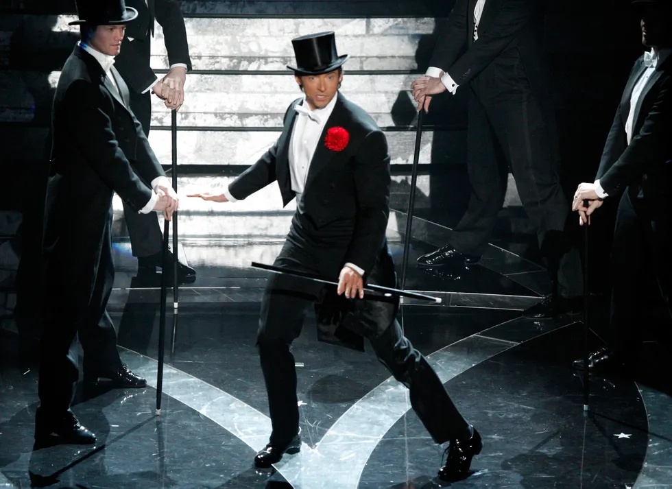

Ser el maestro o maestra de ceremonias en la noche de los premios de Hollywood no es algo fácil. Descubre quiénes han llevado ese honor con mejores críticas.
Desde los primeros Premios de la Academia en 1929, ha habido un número de pesos pesados del mundo del espectáculo tomando la responsabilidad de ser los anfitriones durante la noche más importante para la industria de Hollywood: ser el conductor o conductora de un broche final a una temporada de premios. No es tarea fácil, tienes a unos cuantos millones de personas viéndote y juzgándote al otro lado de la pantalla.
Personalmente mi presentador favirito fue Hugh Jackman por los siguientes motivos:
Hugh Jackman fue una elección interesante como presentador en 2009. Viéndole nadie le puede negar que él era "el gran showman". Su estilo podía competir competir con una gala de entrega de los Tony. Su sentido del humor y don de gentes impulsó la gala.
La estrella comenzó a cantar durante su monólogo de apertura, donde le dio una serenata a Kate Winslet, levantó a Anne Hathaway de su asiento y la subió al escenario y luchó por mantener la compostura mientras cantaba una oda a las películas nominadas.
Luego entregó otro número musical pidiendo la ayuda de Zac Efron, Vanessa Hudgens, Amanda Seyfried y Beyoncé... sí, Beyoncé, y todos cantaron un popurrí de temas de Chicago, Grease, Moulin Rouge y Dreamgirls. Digno de Broadway, desde luego.
 Volver